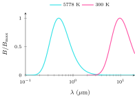

; every body above 0 K emits, and real bodies are described relative to this reference.
; every body above 0 K emits, and real bodies are described relative to this reference.Statement
Every body at K emits electromagnetic radiation depending on  and on its surface, and reflects, absorbs or transmits radiation from outside. The black body is the ideal emitter and absorber:
and on its surface, and reflects, absorbs or transmits radiation from outside. The black body is the ideal emitter and absorber:
 , J s, J K, , .
, J s, J K, , .
Picture

Normalised Planck curves of the Sun and the Earth: peaks near 0.5 µm and 9.7 µm.
Consequences
- the area under the curve grows as and the peak moves to shorter
 as grows (Stefan–Boltzmann and Wien);
as grows (Stefan–Boltzmann and Wien); - curves for different never cross: at every a hotter body emits more;
- for (microwaves) : radiance proportional to temperature (Rayleigh–Jeans), the basis of passive microwave radiometry.
Worked example
Total solar exitance: W m . At the Earth this is diluted by : W m, the solar constant. The Earth at 288 K emits W m, mostly beyond 4 µm.
. At the Earth this is diluted by : W m, the solar constant. The Earth at 288 K emits W m, mostly beyond 4 µm.
Intuition
Temperature fixes both how much a body glows and in what colour: a stove plate goes from invisible infrared to red to orange as it heats.
Pitfall
Planck's law describes emission only. In the reflective bands what the sensor sees is reflected sunlight, governed by reflectance, not by the temperature of the ground.